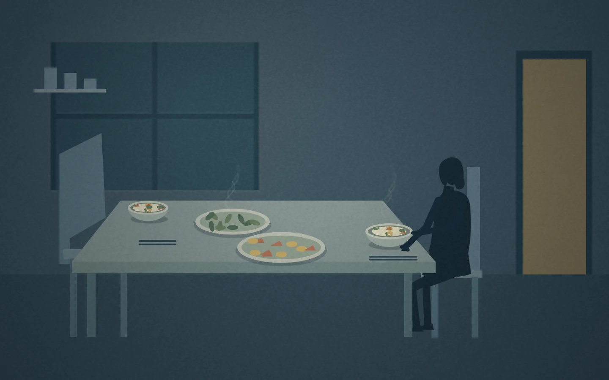
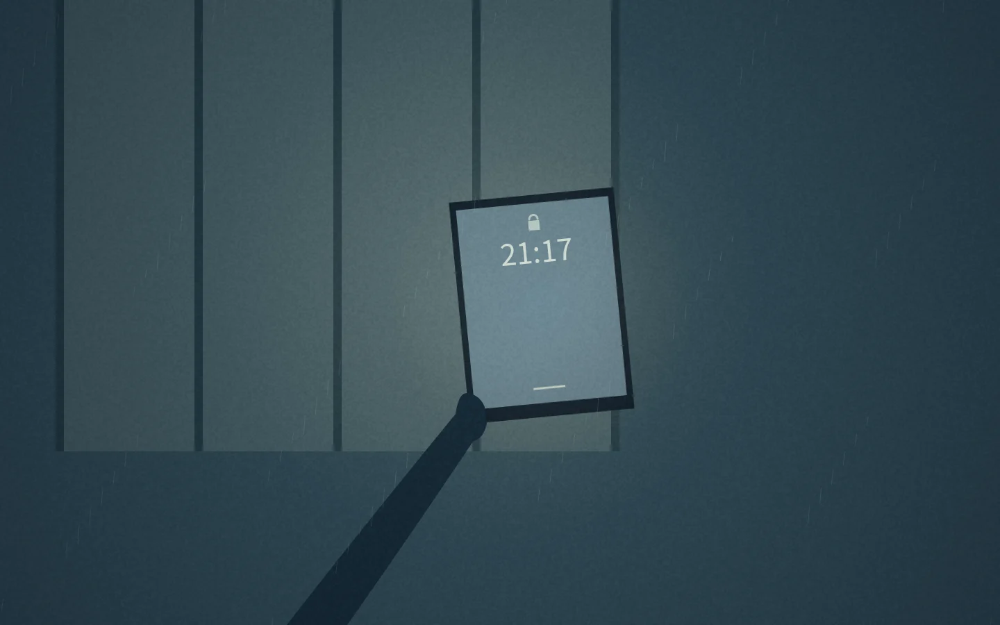

决策 01
让交互延续人物正在做的事。
两个人正在教室里各自收拾桌面，早期版本却切回车窗，让观众拖动反光完成转场。试看时，我发现这个操作切断了正在发生的事。

我的判断与决定
把交互留在同一间教室，沿女主的动作推近笔记本，将合上封面作为这一段的结束。
具体实现
拖动未到位时，封面轻轻弹回；合上后，纸封轻响，底声收掉，再通过短暗场和字幕衔接后续画面。正式第一幕中已可体验。
从个人写作，到交互影像随笔。

下面两次调整，展示了我如何通过试看识别问题，再把感受转化为可以实现和检查的修改要求。
两个人正在教室里各自收拾桌面，早期版本却切回车窗，让观众拖动反光完成转场。试看时，我发现这个操作切断了正在发生的事。
把交互留在同一间教室，沿女主的动作推近笔记本，将合上封面作为这一段的结束。
拖动未到位时，封面轻轻弹回；合上后，纸封轻响，底声收掉，再通过短暗场和字幕衔接后续画面。正式第一幕中已可体验。
我希望看手机时观众能静下来，为舞会触颈处音乐的重新进入留出空间。但便利店的音乐退场显得突兀；此前单纯扩大静音区域的方案，也没有达到我想要的效果。

01 / 日常用连续发展的音乐陪伴日常，在她准备离店时逐渐退下。

02 / 安静的间隙退场拉长到约 5.8 秒，由脚步、开门和环境声承接；手机特写保持无配乐。
在手触碰脖子的节点进入，让回忆拥有不同的听觉温度。
以上为声音结构示意。配乐：Scott Buckley · CC BY 4.0 · 使用经剪辑、淡入淡出及音量调整的录音片段。
选择许可明确的成品音乐，结合画面试听，并让环境声连接安静段落与后面的音乐入点。
Codex 协助查找资源、处理音频与检查播放；我通过试听决定选曲、入点及退场调整。
试看中出现过手臂姿态不自然、物品拿走后仍留在原处，以及动作和声音不同步等问题。我通过具体画面和时间点指出偏差，描述期望的行为，并要求检查其他场景是否也有类似问题。
我负责体验方向、反馈和取舍，Codex 执行代码实现、音频处理及部署操作。这里记录的是作者试看与协作迭代，目前未进行外部用户研究。
指出场景、表达意图及期望行为。
借助 Codex 将要求变成可检查的版本。
结合实际动作、节奏、画风和声音判断效果。
检查修改，再核对上线后的实际体验。
Codex 是我推进制作时使用的主要协作工具。下列技术用于具体实现；我通过明确体验要求、评估预览和决定修改来推动项目。
实际用途协作实现原型、修改代码、调试与交付。
参与与分工我提出具体要求、检查预览，并作设计与验收判断。
实际用途页面结构、中英文排版、整屏布局及界面转场。
参与与分工Codex 编写实现；我检查呈现与使用体验。
实际用途用代码绘制剪影与场景，实现动画、字幕时序和拖动合书。
参与与分工我定义并调整叙事和交互要求；Codex 实现。
实际用途拟音、播放同步、音频剪辑、淡入淡出及保持音高的倍速版本。
参与与分工Codex 操作处理；我试听并决定声音方向。
实际用途版本记录、独立分支，以及作品集内独立地址的网页发布。
参与与分工Codex 执行版本管理与部署；我提出要求并检查交付。
实际用途检查语言、时序、交互、布局和音频信号，并生成实际截图。
参与与分工Codex 执行实现检查；这些检查不等同于外部用户测试。
Canvas 是作品使用的浏览器绘图技术。以上清单记录各项工具在制作中的具体用途与协作分工。
第一幕已提供中英文体验，包含字幕、配乐、环境音和交互。目前没有录制旁白，其余章节仍待续。